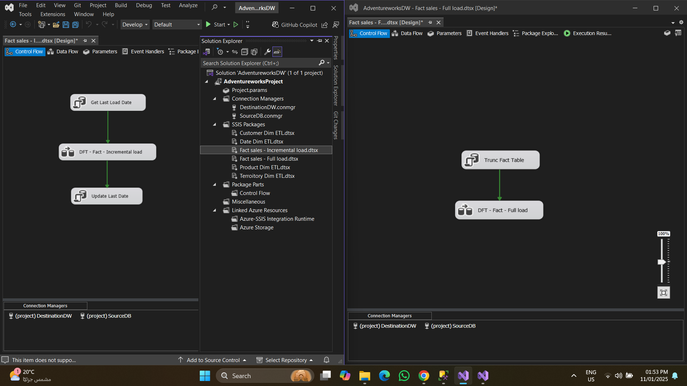
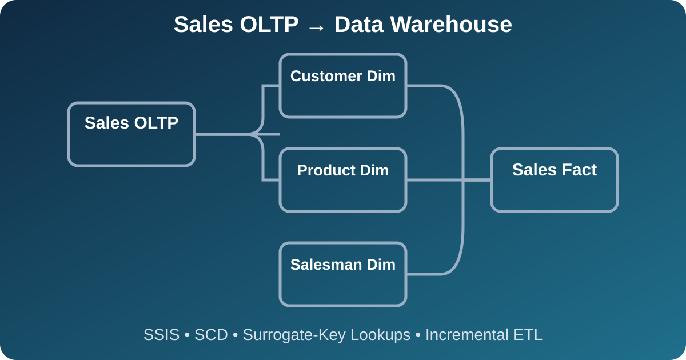
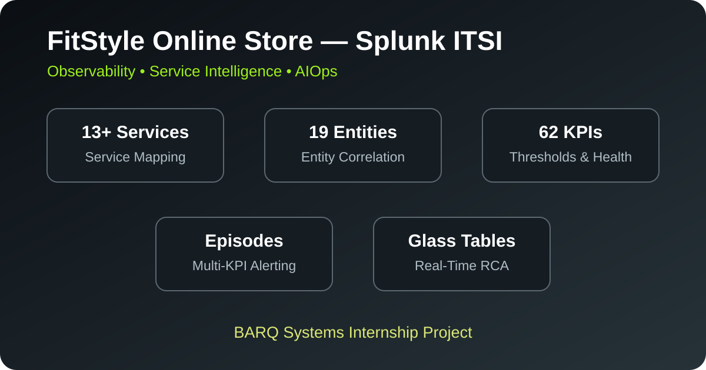
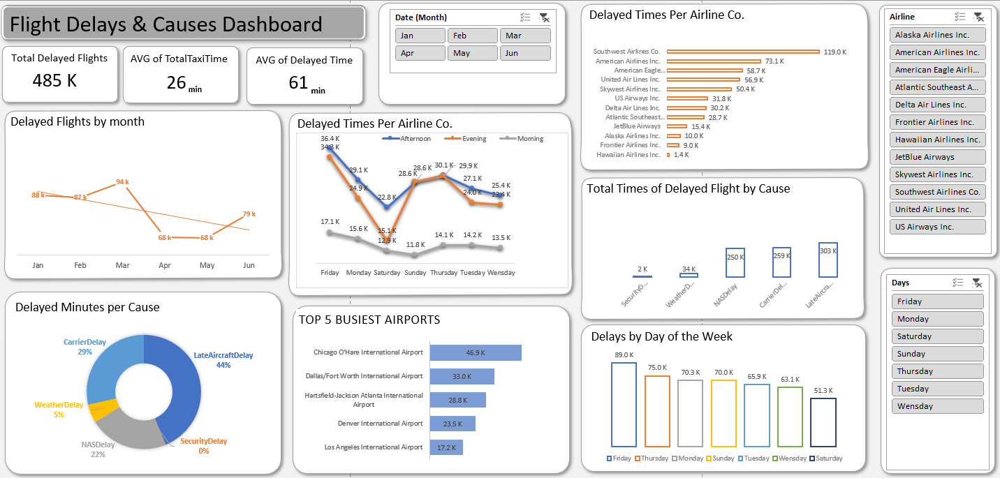
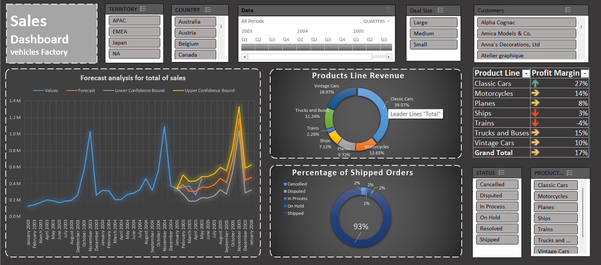

LendingClub Credit Risk Data Platform
ITI graduation project combining batch and streaming pipelines for loan analytics, credit-risk reporting, and near-real-time processing.
Data Engineer
I build reliable data pipelines, dimensional models, cloud data platforms, and analytics-ready datasets across batch, streaming, BI, and observability use cases.
End-to-end projects covering data warehousing, ETL/ELT, dimensional modeling, analytics engineering, stream processing, cloud platforms, data quality, and observability.
Flagship Project
Built an end-to-end port operations data platform using SQL Server, SSIS, T-SQL, and Power BI. The solution implements Bronze, Silver, and Gold layers, data-quality validation, Type 1 dimensions, a manual SCD Type 2 customer dimension, fact tables, audit logic, and operational dashboards.

ITI graduation project combining batch and streaming pipelines for loan analytics, credit-risk reporting, and near-real-time processing.

Layered dbt + Snowflake project with source, dimension, fact, and mart models, SCD Type 2 snapshots, advanced tests, lineage, documentation, and CI.

Dimensional warehouse with Customer, Product, Territory, and Date dimensions, SCD handling, and separate full and incremental fact-loading packages.

SSIS pipeline loading Customer, Product, and Salesman dimensions with SCD processing, surrogate-key lookups, and incremental sales fact loading.

Batch telecom ETL pipeline that ingests flat files, cleans and validates records, loads SQL Server, captures rejected rows, and maintains auditability.

E-commerce observability implementation covering 13+ services, 19 entities, and 62 KPIs, with service mapping, Episodes, Glass Tables, alerts, and root-cause analysis.
Interactive reporting projects focused on KPI design, business performance analysis, data preparation, and decision-support dashboards.

Dynamic Excel dashboard for filtering airlines, airports, and time periods while tracking flight volume, delay percentages, and average delay duration.

Interactive Excel sales dashboard using Power Query for preparation, KPI tracking, forecast analysis, and profit-margin evaluation.